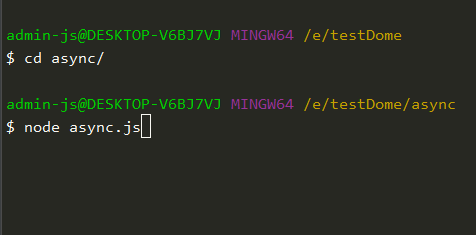

async javascript的异步写法从callback→Promise→Generator→async
基础用法 1 2 3 4 5 6 7 8 9 10 11 12 13 14 15 16 17 18 19 20 function getNameList (id ) let name = [ {id : 7 , name : 'Tim' }, {id : 8 , name : 'George' } ]; let a name.forEach(item => if (item.id === id) { a = item } }) return a } async function getList (id ) return await getNameList(id) } getList(7 ).then(res => console .log(res); })
async函数会返回一个Promise，可以使用then方法添加回调函数。当函数执行时，一旦遇到await就会先返回，等到异步操作完毕，在执行函数后面的语句。
async 起什么作用 async 函数（包含函数语句、函数表达式、Lambda表达式）会返回一个 Promise 对象，如果在函数中 直接 return一个量，async 会把这个量通过 Promise.resolve() 封装成 Promise 对象。
1 2 3 4 5 6 async function testAsync ( return "hello Hello" ; } const result = testAsync();console .log(result);
看到上面这个例子，我们只用了async，没有使用await，看看我们打印出了啥
1 Promise { "hello Hello" }
控制台输出的是一个Promise对象，也就是第一个例子，getList调用后面可以接then的原因
1 2 3 4 5 async function testAsync ( "hello Hello" ; } const result = testAsync();console .log(result);
返回了Promise { undefined }，因为没有返回值,所以Promise.resolve(undefined)
await 在干什么 用node写一个异步读取文件内容的demo,来看看一个需要耗时的任务
1 2 3 4 5 6 7 8 9 10 11 12 13 14 15 16 17 18 const fs = require ('fs' );const readFile = function (fileName ) return new Promise (function (resolve, reject ) fs.readFile(fileName, function (error, data ) if (error) reject(error); setTimeout(() =>2000 ) }); }); }; async function fileName (fileName ) return await readFile(fileName) } fileName('./test.js' ).then(res => console .log(res.toString()); }) console .log(1111 )

async|await到底做了什么？ async将函数变为异步，再将该函数的返回值封装成Promise。resolve()
1 2 3 4 5 6 7 8 9 function time ( return new Promise (resolve => setTimeout(() =>"1s" ), 1000 ); }); } time().then(res => console .log("yes" , res); });
改用async/await
1 2 3 4 5 6 7 8 9 10 11 function time ( return new Promise (resolve => setTimeout(() =>"1s" ), 1000 ); }); } async function test ( const res = await time() console .log(res); } test ()
为什么time函数不加上async呢？
async/await优势 下面来写个读取多个文件的demo，先用Promise
1 2 3 4 5 6 7 8 9 10 11 12 13 14 15 16 17 18 19 20 21 22 23 function getFileContent (fileName ) return new Promise ((resolve, reject ) => { const fullFileName = path.resolve(__dirname, 'files' , fileName) fs.readFile(fullFileName, (err, data) => { if (err) { reject(err) return } resolve( JSON .parse(data.toString()) ) }) }) } getFileContent('a.json' ).then(aData => console .log('a data' , aData) return getFileContent(aData.next) }).then(bData => console .log('b data' , bData) return getFileContent(bData.next) }).then(cData => console .log('c data' , cData) })
async/await
1 2 3 4 5 6 7 8 9 async function readFileData ( const aData = await getFileContent('a.json' ) console .log('a data' , aData) const bData = await getFileContent(aData.next) console .log('b data' , bData) const cData = await getFileContent(bData.next) console .log('c data' , cData) } readFileData()
一眼看上去是不是比Promise的写法清晰多了,基本和同步代码一样
async/await的缺点 async/await的缺点就是没有自带可以捕获错误的API,需要手动加try/catch
1 2 3 4 5 6 7 8 9 10 11 12 async function readFileData ( try { const aData = await getFileContent('a.json' ) console .log('a data' , aData) const bData = await getFileContent(aData.next) console .log('b data' , bData) const cData = await getFileContent(bData.next) console .log('c data' , cData) } catch (err) { console .error(err) } }
以上就是我对async/await的知识总结，如果有我没讲到的，请留言互相讨论。